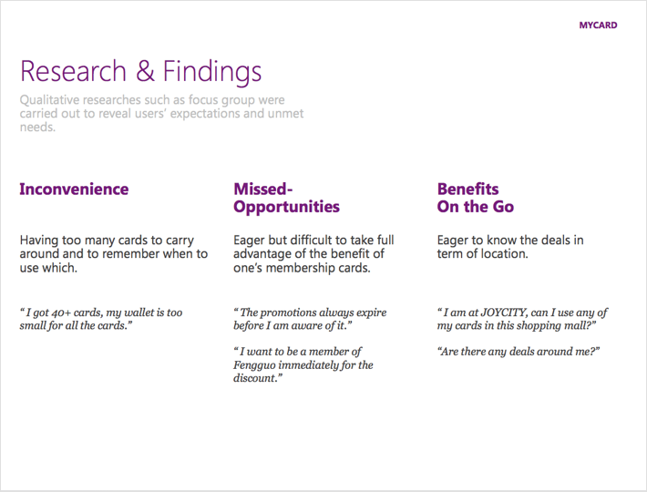
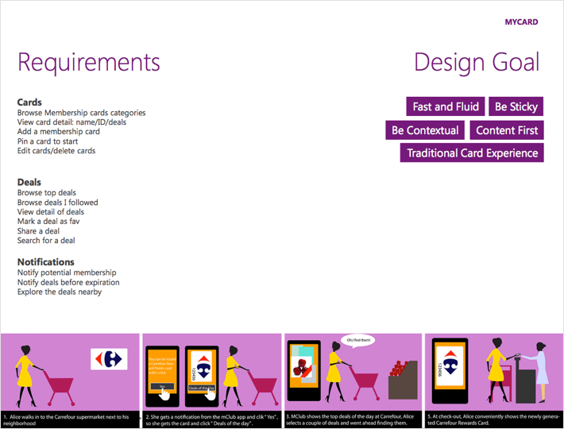
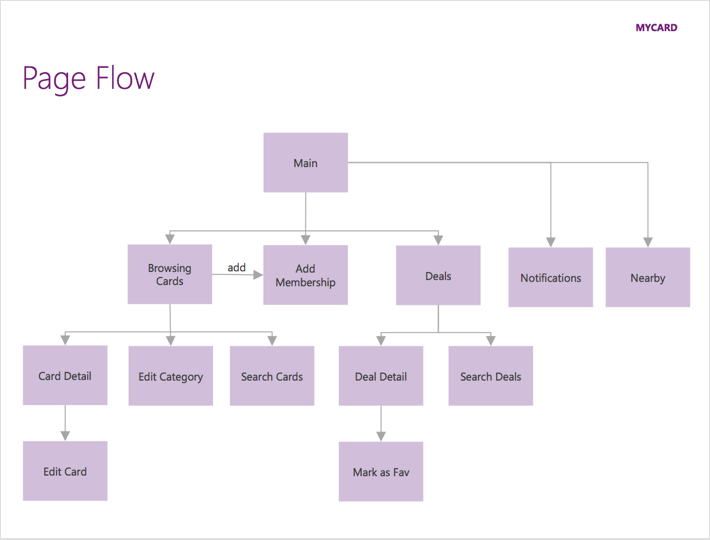
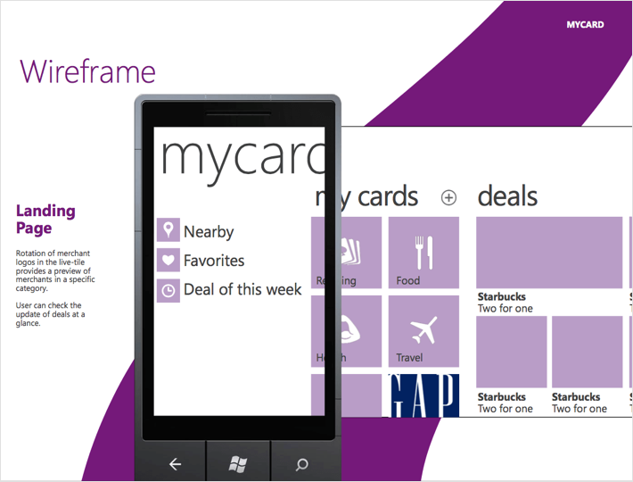
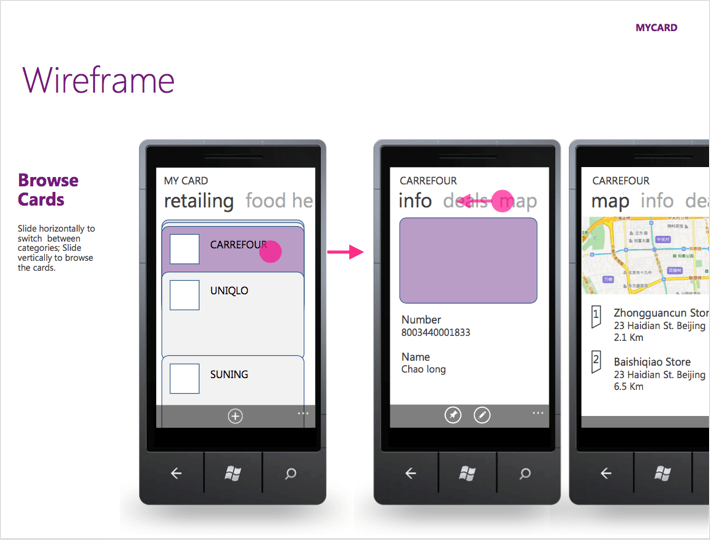
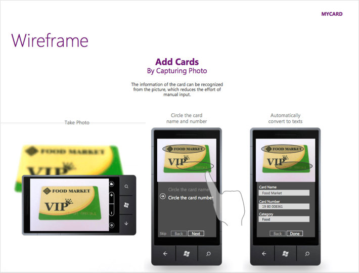
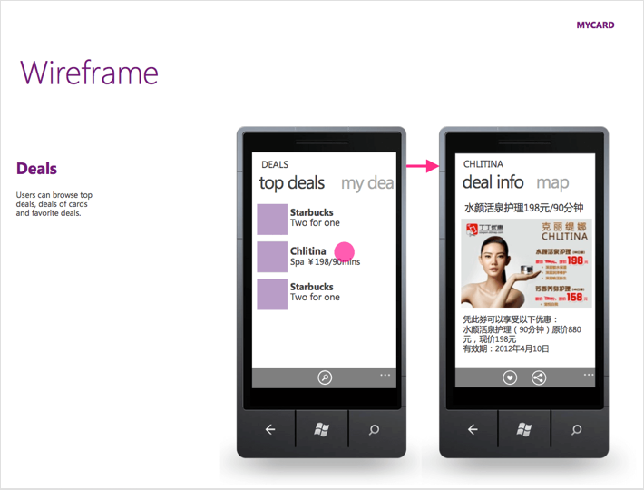
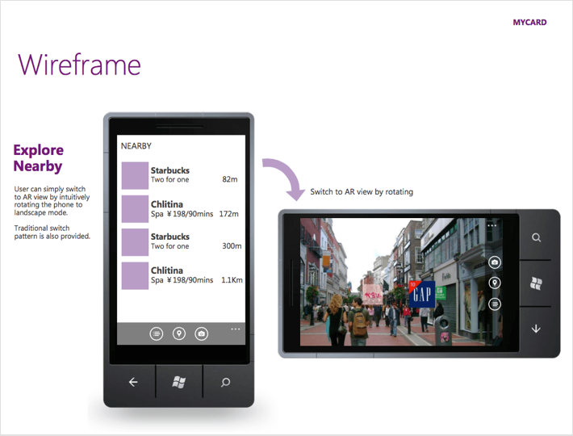
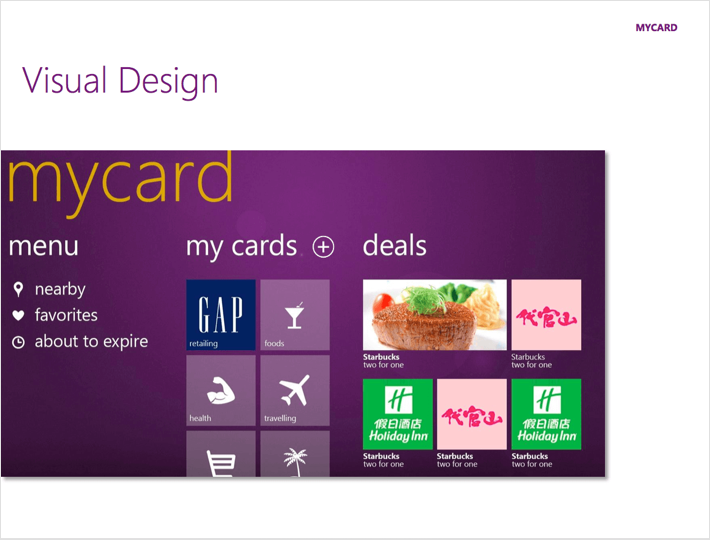

Mycard是内部创新小组的一次应用设计提案。我们想解决的问题很简单，帮助用户管理会员卡，以此将消费者与商家连接。我和产品经理和工程师紧密合作，应用用户中心的设计方法，将想法塑造为产品，并且可视化成为概念证明(proof-of-concept)。
发现方向
最初的头脑风暴后，我们选定用放大镜观察居民消费衣食住行这个领域。在研究员的帮助下，我们在焦点小组中访谈不同的消费者，收获了很多用户未被满足的需求、产品机会。我们发现，对会员卡片的管理以及如何充分利用会员卡常常令消费者感到困扰。至此我们缩小了范围，锁定了目标：帮助消费者把线下已有的会员卡映射到数字世界，并帮助和更多商家建立关系。

理解问题
团队讨论出核心场景，通过故事描绘出用户如何在特定的场景中利用移动应用完成特定的任务。基于这些故事，我继续推导出整个app所需具备的功能集合，梳理信息架构，并初步拟定了几条设计原则，比如在metro设计风格下保留卡片的物理特性，增添界面的愉悦感。
 
原型和视觉
这个阶段我从低保真原型开始，尝试了多种方案，试图在传达功能和内容的同时又符合Windows Phone平台特性。通过走廊用户测试收集反馈，加上与团队多次讨论，原型也不断迭代修改。      
结果